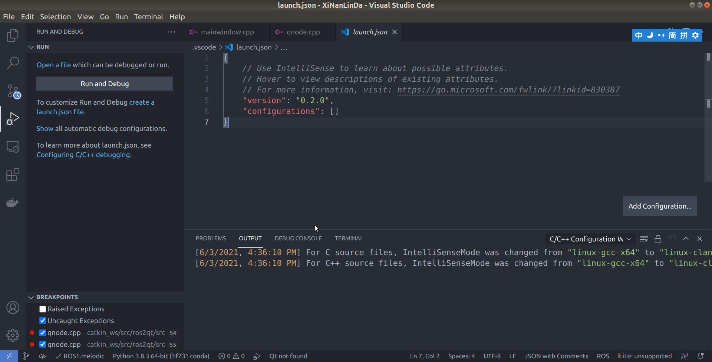
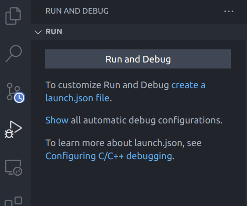
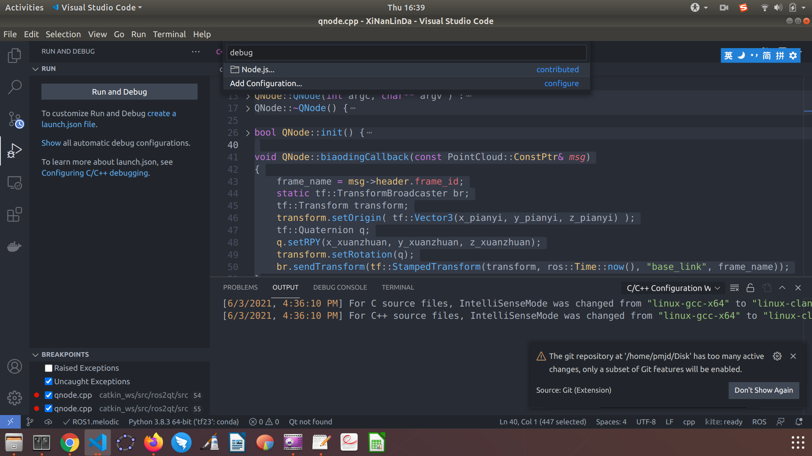
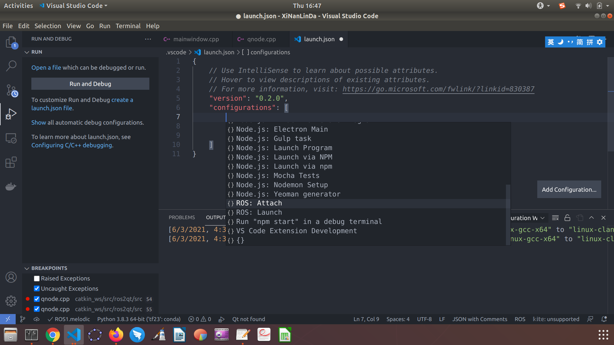

Ros create msg
- 在node节点文件夹下创建msg文件夹
- 在msg文件夹下创建 **.msg文件
detect.msg
bool begin
string first_name
string last_name
uint8 age
uint32 score
int64 stateLabel
int64 CIPV
int64 trackID
int64 trackFrameNum
int64 obstacleType
float32 real3DRightX
float32 real3DLeftX
float32 width
float32 real3DLowY
float32 real3DUpY
float32 height
float32 HMW
float32 fuzzyCollisionTimeZ
float32 longitudinalZ
float32 speedOfLongitudinal
float32 lateralX
float32 speedOfLateral
float32 currentSpeed
detect_array.msg
dectect []
package.xml
<build_depend>message_generation</build_depend>
<exec_depend>message_runtime</exec_depend>
CMakelists.txt
find_package(catkin REQUIRED COMPONENTS
roscpp
rospy
std_msgs
message_generation
)
catkin_package(
...
CATKIN_DEPENDS message_runtime ...
...)
add_message_files(
FILES
detect.msg
detect_array.msg
)
generate_messages(
DEPENDENCIES
std_msgs
)
- 包含头文件
#include "smart_eye/detect.h"
#include "smart_eye/detect_array.h"
msg_pub = nh_.advertise<smart_eye::detect_array>("detect_array", 10);
smart_eye::detect msg;
smart_eye::detect_array msg_array;
msg.stateLabel = stateLabel;
msg.CIPV = CIPV;
msg.trackID = trackID;
msg.trackFrameNum = trackFrameNum;
msg.obstacleType = obstacleType;
msg.real3DRightX = real3DRightX;
msg.real3DLeftX = real3DLeftX;
msg.width = width;
msg.real3DLowY = real3DLowY;
msg.real3DUpY = real3DUpY;
msg.height = height;
msg.HMW = HMW;
msg.fuzzyCollisionTimeZ = fuzzyCollisionTimeZ;
msg.longitudinalZ = longitudinalZ;
msg.speedOfLongitudinal = speedOfLongitudinal;
msg.lateralX = lateralX;
msg.speedOfLateral = speedOfLateral;
msg.currentSpeed = currentSpeed;
msg_array.push(msg);
msg_pub.publish(msg_array);
引用其他包的ｍｓｇ
首先cmakelists.txt
find_package(catkin REQUIRED COMPONENTS
message_generation
pcl_ros
roscpp
rospy
std_msgs
wjj
)
catkin_package(
INCLUDE_DIRS include
CATKIN_DEPENDS message_runtime pcl_ros roscpp rospy std_msgs wjj
)
add_dependencies(teaching
${catkin_EXPORTED_TARGETS}
wjj_gencpp)
再者package.xml
<build_depend>wjj</build_depend>
<exec_depend>wjj</exec_depend>
最后使用
#include <wjj/SaeJ1939.h>
sudo rosdep init &rosdep update失败
该解决方案是针对由于以下两个无法正常访问，但可以ping通，于是修改hosts文件，加入以下两个网址的IP地址实现访问。
'sudo gedit /etc/hosts'
添加
199.232.28.133 raw.githubusercontent.com
151.101.228.133 raw.github.com
修改完成后，在终端执行
sudo rosdep init
redep update
vscode python ros debug
首先
catkin_make -DCMAKE_BUILD_TYPE=DEBUG
其次点击debug按扭,再点击`create a launch.json file

选择 Show

选择 Add Configuration..

再添加 Ros Attach

launch.json
{
"version": "0.2.0",
"configurations": [
{
"name": "ROS: Attach",
"type": "ros",
"request": "attach"
}
]
}
ｄebug时遇到路径问题,例如rosmsg路径，最好在文件属性里复制路径，不然容易出错
import sys
sys.path.append("/home/pmjd/Downloads/catkin_ws/devel/lib/python2.7/dist-packages")
Error: package 'teleop_twist_keyboard' not found
You need to download the teleop_twist_keyboard from the github to your ~/catkin_ws/src folder. Steps:
1) cd ~/catkin_ws/src
2) git clone https://github.com/ros-teleop/teleop_twist_keyboard
Spawn service failed. Exiting.
export ROS_MASTER_URI=http://promote-OMEN-by-HP-Laptop-17-cb1xxx:11311/
createQuaternionFromRPY
static geometry_msgs::Quaternion createQuaternionFromRPY(double roll, double pitch, double yaw) { geometry_msgs::Quaternion q; double t0 = cos(yaw * 0.5); double t1 = sin(yaw * 0.5); double t2 = cos(roll * 0.5); double t3 = sin(roll * 0.5); double t4 = cos(pitch * 0.5); double t5 = sin(pitch * 0.5); q.w = t0 * t2 * t4 + t1 * t3 * t5; q.x = t0 * t3 * t4 - t1 * t2 * t5; q.y = t0 * t2 * t5 + t1 * t3 * t4; q.z = t1 * t2 * t4 - t0 * t3 * t5; return q; }
launch 启动 rviz
<launch>
<node type="rviz" name="rviz" pkg="rviz" args="-d $(find package_name)/rviz/config_file.rviz" />
</launch>
rosdep失败
首先 sudo rosdep init
这一步会在 /etc/ros/rosdep/sources.list.d/目录下新建 20-default.list
# os-specific listings first
yaml https://raw.githubusercontent.com/ros/rosdistro/master/rosdep/osx-homebrew.yaml osx
# generic
yaml https://raw.githubusercontent.com/ros/rosdistro/master/rosdep/base.yaml
yaml https://raw.githubusercontent.com/ros/rosdistro/master/rosdep/python.yaml
yaml https://raw.githubusercontent.com/ros/rosdistro/master/rosdep/ruby.yaml
gbpdistro https://raw.githubusercontent.com/ros/rosdistro/master/releases/fuerte.yaml fuerte
# newer distributions (Groovy, Hydro, ...) must not be listed anymore, they are being fetched from the rosdistro index.yaml instead
我们需要依次下载 osx-homebrew.yaml等这几个 yaml文件,下载工具, 存放在/home/promote/Downloads目录下
然后更改 20-default.list为
# os-specific listings first
yaml file:///home/promote/Downloads/2021-04-01-14-01-21-master-osx-homebrew.yaml osx
# generic
yaml file:///home/promote/Downloads/2021-04-01-14-02-25-master-base.yaml
yaml file:///home/promote/Downloads/2021-04-01-14-05-35-master-python.yaml
yaml file:///home/promote/Downloads/2021-04-01-14-06-50-master-ruby.yaml
gbpdistro file:///home/promote/Downloads/2021-04-01-14-07-41-master-fuerte.yaml fuerte
# newer distributions (Groovy, Hydro, ...) must not be listed anymore, they are being fetched from the rosdistro index.yaml instead
还需要使用 mate-search-tool 在 /usr/lib/目录下找到包含 DEFAULT_INDEX_URL 的 py文件。/usr/lib/python2.7/dist-packages/rosdistro/__init__.py
找到代码行
DEFAULT_INDEX_URL = 'https://raw.githubusercontent.com/ros/rosdistro/master/index-v4.yaml'
同样我们下载 index-v4.yaml文件至 /home/promote/Downloads，把此行代码改为
# DEFAULT_INDEX_URL = 'https://raw.githubusercontent.com/ros/rosdistro/master/index-v4.yaml'
DEFAULT_INDEX_URL = 'file:/home/promote/Downloads/2021-04-01-14-51-42-rosdistro-index-v4.yaml'
这时再运行 rosdep update
会提示 No such file or directory: '/home/promote/Downloads/dashing/distribution.yaml'
我们需要下载 https://raw.githubusercontent.com/ros/rosdistro/master/dashing/distribution.yaml
在 /home/promote/Downloads目录下新建文件夹 dashing，并把下载的 yaml文件放入 dashing文件夹下重命名为 distribution.yaml
重复上一步，依次下载完 dashing, kinetic, melodic, rolling, noetic, foxy等
再运行 rosdep update就成功了
ros node 打包
安装依赖
Install bloom:
sudo apt-get install python-bloom
or (recommended)
sudo pip install -U bloom
Install fakeroot:
sudo apt-get install fakeroot
准备
To make a debian folder structure from the ROS package you must cd into the package to be in the same folder where package.xml file is.
生成debian包
bloom-generate rosdebian --os-name ubuntu --os-version trusty --ros-distro indigo
ros总是链接anaconda下的库文件
export LD_LIBRARY_PATH=""
Use parent frame_id Display
- 在launch文件里添加
<node pkg="tf" type="static_transform_publisher" name="base_to_map" args="1000 0 0 0 0 0 /base_link /map 50" >
<node pkg="ros2qt" type="ros2qt" name="ros2qt" >
<rosparam>
use_sim_time: true
</rosparam>
</node>
<node pkg="ros2qt" type="myclock.py" name ="myclock"/>
myclock.py
#!/usr/bin/python
import rospy
from rosgraph_msgs.msg import Clock
import time
def simtime_talker():
rospy.set_param('use_sim_time',False)
pub1 = rospy.Publisher('clock',Clock, queue_size=10)
rospy.init_node('talker', anonymous=True)
rate = rospy.Rate(10) # 10hz
sim_speed_multiplier = 10
sim_clock = Clock()
zero_time = rospy.get_time()
while not rospy.is_shutdown():
sim_clock.clock = rospy.Time.from_sec(sim_speed_multiplier*(rospy.get_time() - zero_time))
rospy.loginfo(sim_clock)
pub1.publish(sim_clock)
rate.sleep()
if __name__ == '__main__':
try:
simtime_talker()
except rospy.ROSInterruptException:
pass
- 在终端建立父子关系
rosrun tf stat_transform_publisher 0 0 1 0 0 0 1 base_link rslidar 50
- 即可在rviz里设置
fixed frame为base_link,观看点云数据
如何发布tf转换关系
- Use static_transform_publisher -- this one is a ready to use node, that you can run from command line.
rosrun tf stat_transform_publisher 0 0 1 0 0 0 world rslidar 50
- Use tf::TransformBroadcaster -- to create transforms in a code.
void QNode::biaodingCallback(const PointCloud::ConstPtr& msg)
{
frame_name = msg->header.frame_id;
static tf::TransformBroadcaster br;
tf::Transform transform;
transform.setOrigin( tf::Vector3(x_pianyi, y_pianyi, z_pianyi) );
tf::Quaternion q;
q.setRPY(x_xuanzhuan, y_xuanzhuan, z_xuanzhuan);
transform.setRotation(q);
br.sendTransform(tf::StampedTransform(transform, ros::Time::now(), "base_link", frame_name));
}
roslaunch 包含 roslaunch文件
<include file="$(find robot_description)/launch/urdf_test.launch" />
roslaunch 包含yaml 文件
<rosparam file="$(find ldtest)/config/para.yaml" command="load" />
para.yaml
x_offset: -1.45
y_offset: 0.56
z_offset: 2.95
x_jiaodu: -1.5
y_jiaodu: 44.3
z_jiaodu: 4.0
stone2car_x: -1.25
stone2car_y: 5.35
stone2car_z: -1.0
dipan_init_jiaodu: 91.4
remote: true
roslaunch py node
<node name="LidarTool" pkg="ldtest"
type="LidarTool.py" required="false"
output="screen"
/>
ros 更换中科大源
sudo nano /etc/apt/sources.list.d/ros-latest.list
添加
deb http://mirrors.ustc.edu.cn/ros/ubuntu/ bionic main
ros 阿里源
deb https://mirrors.aliyun.com/ros/ubuntu/ bionic main
Ros clock
#!/usr/bin/python
import rospy
from rosgraph_msgs.msg import Clock
import time
def simtime_talker():
rospy.set_param('use_sim_time',False)
pub1 = rospy.Publisher('clock',Clock, queue_size=10)
rospy.init_node('talker', anonymous=True)
rate = rospy.Rate(10) # 10hz
sim_speed_multiplier = 10
sim_clock = Clock()
zero_time = rospy.get_time()
while not rospy.is_shutdown():
sim_clock.clock = rospy.Time.from_sec(sim_speed_multiplier*(rospy.get_time() - zero_time))
rospy.loginfo(sim_clock)
pub1.publish(sim_clock)
rate.sleep()
if __name__ == '__main__':
try:
simtime_talker()
except rospy.ROSInterruptException:
pass
有些msg不显示，是因为时间落后问题。
<launch>
<node pkg="ros2qt" type="ros2qt" name="ros2qt" >
<rosparam>
use_sim_time: true
</rosparam>
</node>
<node pkg="ros2qt" type="myclock.py" name ="myclock"/>
<include file="$(find rslidar_pointcloud)/launch/rs_lidar_16.launch" />
</launch>
在开启一个Node之前，当把 use_sim_time设置为 true时，这个节点会从clock Topic获得时间。所以操作这个clock的发布者，可以实现一个让Node中得到ROS Time暂停、加速、减速的效果。同时下面这些方面都是跟Node透明的，所以非常适合离线的调试方式。当把ROSbag记下来以后重新play出来时，加两个横杠，--clock，它就会发布出这个消息。
Ros 查看Topic
QMap<QString,QString> QNode::get_topic_list()
{
ros::master::V_TopicInfo topic_list;
ros::master::getTopics(topic_list);
QMap<QString,QString> res;
for(auto topic:topic_list)
{
res.insert(QString::fromStdString(topic.name),QString::fromStdString(topic.datatype));
}
return res;
}